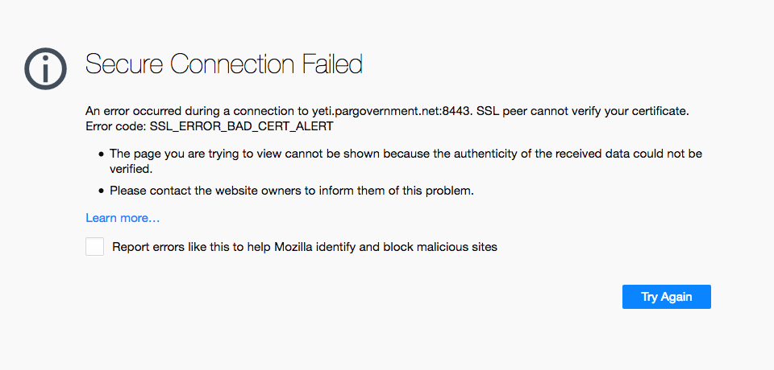

Configuration
Configure database connection by updating /opt/tak/CoreConfig.xml:
<repository enable="true" numDbConnections="200" primaryKeyBatchSize="500"
insertionBatchSize="500">
<connection url="jdbc:postgresql://<Database_server_IP_address>:5432/cot" username="martiuser"
password="Database_password"/>
</repository>
sudo systemctl daemon-reload
Start/stop TAK Server services with:
sudo systemctl [start|stop] takserver
Or on resource limited hosts:
sudo systemctl [start|stop] takserver-noplugins
You can set TAK Server to start at boot by running
sudo systemctl enable takserver
For secure operation, TAK Server requires a keystore and truststore (X.509 certificates).
Next, follow the instructions in Appendix B to create these certificates. TAK Server by default is TLS only, so certificate generation, including an administrative certificate is required for configuration.
Verify that the steps in Appendix B have been followed by checking the following items:
Certificates are present at:
/opt/tak/certs/files
The admin cert has been generated and an admin account in TAK Server was created with the command:
sudo java -jar /opt/tak/utils/UserManager.jar certmod -A /opt/tak/certs/files/admin.pem
Import this client certificate into your browser.
If you are using Firefox, go to Settings -> Preferences -> Privacy & Security -> Certificates -> View Certificates
Go to Import. Upload this file:
/opt/tak/certs/files/admin.p12
Enter the certificate password. The default password is atakatak
Browse to:
https://localhost:8443
Select the admin certificate to log in.
An error message similar to this indicates that the correct client certificate has not been imported into the browser:

Once logged in with the admin certificate, configure the TAK Server with the following instructions:
Configure TAK Server to connect to the database. Access the Database configuration settings:
Edit the database connection address, specifying the hostname or IP address of the database server:

Restart TAK Server
sudo systemctl restart takserver
Or on resource limited hosts
sudo systemctl restart takserver-noplugins
If you would like to configure TLS for Postgres database connection, refer to Appendix D.